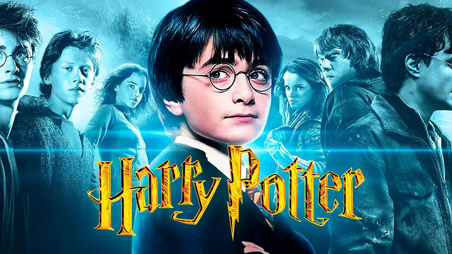

Harry Potter
Bruxo

Biografia de Harry Potter
Harry James Potter mais conhecido como Harry Potter. Ele é um bruxo, considerado um dos mais famosos bruxos dos tempos modernos e o aluno mais famoso da Escola de Magia e Bruxaria de Hogwarts.Linha do tempo
1980 Potter nasceu em Godric's Hollow em 31 de julho de 1980.
2001 Harry Potter e a Pedra Filosofal
2002 Harry Potter e a Camara Secreta
2004Harry Potter e o Prisioneiro de Azkaban
2005 Harry Potter e o Cálice de Fogo
2007 Harry Potter e a Ordem da Fenix
2009 Harry Potter e o Enigma do Principe
2010 Harry Potter e as reliquias da Morte 1
2011 Harry Potter e as reliquias da Morte 2
Se quiser saber mais sobre Harry Potter clique Aqui Clique Aqui
Fontes utilizadas na página: Timetoast e eBiografia